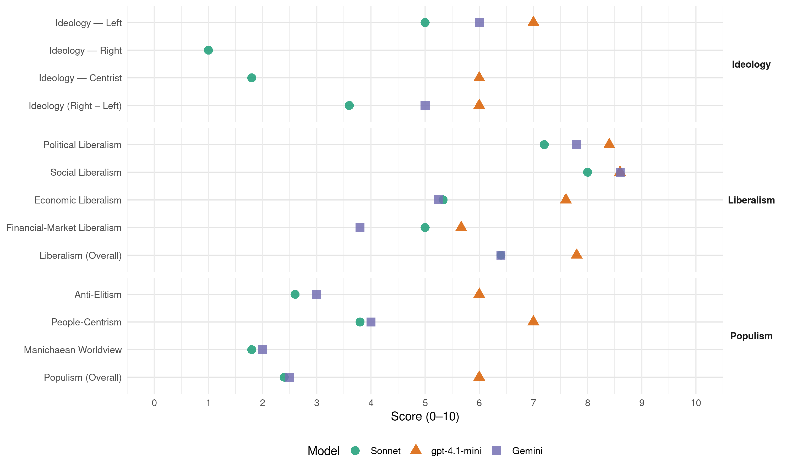

PSOE (Spain, 2011)
manifesto_id 33320_201111
Get full text: This site shows derived annotations and short verbatim quotes only. The full manifesto text is © Manifesto Project / WZB — obtain it via manifesto-project.wzb.eu using the manifesto_id above.
Headline scores
| Dimension | Sonnet | gpt-4.1-mini | Gemini |
|---|---|---|---|
| Populism (Overall) | 2.4 | 6.0 | 2.5 |
| Anti-Elitism | 2.6 | 6.0 | 3.0 |
| People-Centrism | 3.8 | 7.0 | 4.0 |
| Manichaean Worldview | 1.8 | – | 2.0 |
| Ideology (Right − Left) | 3.6 | 6.0 | 5.0 |
| Liberalism (Overall) | 6.4 | 7.8 | 6.4 |
| Political Liberalism | 7.2 | 8.4 | 7.8 |
| Social Liberalism | 8.0 | 8.6 | 8.6 |
| Economic Liberalism | 5.3 | 7.6 | 5.2 |
| Financial-Market Liberalism | 5.0 | 5.7 | 3.8 |
Evidence per dimension
Economic Liberalism
Gemini · score 6.0 · verified · chunk 1
“Promover activamente la libre competencia, con el objetivo”
de forma que las ofertas comerciales se ajusten a la realidad del servicio prestado. Promover activamente la libre competencia, con el objetivo de lograr una disminución en los precios de acceso
Gemini · score 6.0 · verified · chunk 2
“reforma gradual y profunda del mercado eléctrico”
Por todo ello, proponemos una reforma gradual y profunda del mercado eléctrico, para incentivar la
Gemini · score 4.0 · verified · chunk 3
“dejar al mercado… funcionar libremente”
antes que dejar al mercado, con su injusta dotación inicial de recursos y oportunidades, funcionar libremente para luego indemnizar
Gemini · score 5.0 · verified · chunk 4
“potenciar la unidad de mercado”
Código Civil “De las obligaciones y contratos” (1889), con el fin de potenciar la unidad de mercado y favorecer
Gemini · score 5.0 · mixed · chunk 5
“normas tengan la misma fuerza que las del mercado único”
Europa social cuyas normas tengan la misma fuerza que las del mercado único, a través del impulso de un Pacto Social Europeo
gpt-4.1-mini · score 7.0 · verified · chunk 1
“La Ley de Economía Sostenible, que persigue como objetivo global el cambio de modelo económico para España”
En esta legislatura el Gobierno socialista ha aprobado la Ley de Economía Sostenible, que persigue como objetivo global el cambio de modelo económico para España. Necesitamos transformar la economía española, porque nuestro futuro está en ello.
gpt-4.1-mini · score 8.0 · verified · chunk 2
“fomentar el emprendimiento, el crecimiento empresarial, la innovación, la internacionalización”
Hemos impulsado la Ley que regula el Estatuto del trabajo autónomo, garantizando por primera vez los derechos de los trabajadores autónomos, también se aprobó la primera Ley en el ámbito europeo que regula la prestación por cese de actividad de los trabajadores autónomos. La economía social ha tenido un fuerte impulso durante estas últimas legislaturas y aunque esta materia está transferida a las Comunidades Autónomas se ha aprobado la Ley que regula las cooperativas europeas y la Ley de Economía Social. También en los últimos años nuestro tejido empresarial se ha visto favorecido con medidas fiscales, financieras y de simplificación administrativa, cuyo objetivo ha sido fomentar el emprendimiento, el crecimiento empresarial, la innovación, la internacionalización y suavizar así los efectos de la crisis económica.
gpt-4.1-mini · score 8.0 · verified · chunk 3
“inversión social debe ser financieramente sostenible en épocas de crisis”
…La inversión social debe ser financieramente sostenible en épocas de crisis. Pero a diferencia de la derecha, los socialistas nos comprometemos a sostener los grandes servicios públicos de protección social y defender una concepción progresista y justa…
gpt-4.1-mini · score 8.0 · verified · chunk 4
“potenciar la unidad de mercado y favorecer y actualizar las reglas que ordenan el tráfico jurídico y mercantil”
Aprobaremos un nuevo Código de Comercio (el actual es de 1885) y la reforma del libro IV del Código Civil “De las obligaciones y contratos” (1889), con el fin de potenciar la unidad de mercado y favorecer y actualizar las reglas que ordenan el tráfico jurídico y mercantil.
gpt-4.1-mini · score 7.0 · verified · chunk 5
“la internacionalización de las grandes y pequeñas empresas españolas, incrementando nuestras oportunidades comerciales y empresariales”
Una política exterior con intereses en todo el mundo Conscientes del potencial emprendedor de nuestra sociedad y nuestros jóvenes, la política exterior española continuará dando máxima prioridad a la internacionalización de las grandes y pequeñas empresas españolas, incrementando nuestras oportunidades comerciales y empresariales, y apoyando la Responsabilidad Social Corporativa y el respeto por el medio ambiente con el fin de promover un desarrollo sostenible y la creación de valor añadido en el exterior.
Sonnet · score 5.0 · mixed · chunk 1
“libre competencia”
Promover activamente la libre competencia, con el objetivo de lograr una disminución en los precios de acceso que pagan los usuarios
Sonnet · score 5.0 · verified · chunk 2
“tejido industrial competitivo”
Promover la creación de un tejido industrial competitivo en la llamada economía verde con importante potencial de exportación, internacionalización y creación de empleo
Sonnet · score 5.0 · mixed · chunk 3
“dejar al mercado, con su injusta dotación”
Preferimos dotar de recursos y oportunidades a los individuos antes que dejar al mercado, con su injusta dotación inicial de recursos y oportunidades, funcionar libremente para luego indemnizar a los perdedores
Sonnet · score 5.0 · verified · chunk 4
“potenciar la unidad de mercado”
Aprobaremos un nuevo Código de Comercio y la reforma del libro IV del Código Civil, con el fin de potenciar la unidad de mercado y favorecer y actualizar las reglas que ordenan el tráfico jurídico y mercantil
Sonnet · score 6.0 · verified · chunk 5
“internacionalización de las grandes y pequeñas empresas”
la política exterior española continuará dando máxima prioridad a la internacionalización de las grandes y pequeñas empresas españolas, incrementando nuestras oportunidades comerciales
Financial-Market Liberalism
Gemini · score 5.0 · verified · chunk 1
“un sector financiero equilibrado, más controlado y supervisado”
salvaguardar la estabilidad financiera, ahora necesitamos promover un sector financiero equilibrado, más controlado y supervisado, y con una mayor contribución del sector a la sociedad.
Gemini · score 5.0 · verified · chunk 2
“reparto equilibrado de los riesgos entre el deudor y el acreedor”
ley de insolvencia personal que regulará el reparto equilibrado de los riesgos entre el deudor y el acreedor, sin que
Gemini · score 3.0 · verified · chunk 3
“regular adecuadamente el mercado hipotecario”
las personas que tienen limitada la autonomía personal, y a sus familias. - Trabajar en la mejora del acceso a la vivienda de alquiler, y regular adecuadamente el mercado hipotecario para evitar situaciones de abuso
Gemini · score 3.0 · verified · chunk 4
“tasa sobre las transacciones financieras internacionales”
trabajaremos con nuestros socios comunitarios para que la UE adopte una tasa sobre las transacciones financieras internacionales, orientada a reducir
Gemini · score 3.0 · verified · chunk 5
“reducir la especulación en los mercados financieros”
tasa sobre las transacciones financieras internacionales, orientada a reducir la especulación en los mercados financieros. Parte de los fondos recaudados
gpt-4.1-mini · score 6.0 · verified · chunk 1
“El sistema financiero debe estar al servicio de la sociedad y no al revés”
El sistema financiero juega un papel fundamental en la sociedad, como canalizador del crédito a las familias y los sectores productivos, y como un elemento fundamental para permitir la existencia de inversión. El sistema financiero debe estar al servicio de la sociedad y no al revés.
gpt-4.1-mini · score 7.0 · verified · chunk 4
“trabajaremos con nuestros socios comunitarios para que la UE adopte una tasa sobre las transacciones financieras internacionales”
Además, vamos a proponer nuevas fuentes de financiación europeas. En particular, trabajaremos con nuestros socios comunitarios para que la UE adopte una tasa sobre las transacciones financieras internacionales, orientada a reducir la especulación en los mercados financieros.
gpt-4.1-mini · score 4.0 · verified · chunk 5
“tasa sobre las transacciones financieras internacionales, orientada a reducir la especulación en los mercados financieros”
- Además, vamos a proponer nuevas fuentes de financiación europeas. En particular, trabajaremos con nuestros socios comunitarios para que la UE adopte una tasa sobre las transacciones financieras internacionales, orientada a reducir la especulación en los mercados financieros. Parte de los fondos recaudados se destinarán a políticas de cooperación al desarrollo y a la lucha contra el cambio climático.
Sonnet · score 4.0 · mixed · chunk 1
“mercados financieros completamente desregulados”
Esta crisis mundial, que tuvo su origen en un mal funcionamiento de unos mercados financieros completamente desregulados, ha terminado resultando en una gran crisis de carácter real
Sonnet · score 6.0 · verified · chunk 2
“regulación referida a los requisitos de homologación”
Se reforzará la regulación referida a los requisitos de homologación previa, de independencia, de incompatibilidades y de conflictos de interés.
Sonnet · score 5.0 · verified · chunk 3
“regular adecuadamente el mercado hipotecario”
Trabajar en la mejora del acceso a la vivienda de alquiler, y regular adecuadamente el mercado hipotecario para evitar situaciones de abuso o de vulnerabilidad
Sonnet · score 4.0 · verified · chunk 4
“tasa sobre las transacciones financieras internacionales”
trabajaremos con nuestros socios comunitarios para que la UE adopte una tasa sobre las transacciones financieras internacionales, orientada a reducir la especulación en los mercados financieros
Sonnet · score 4.0 · mixed · chunk 5
“restricciones a ciertos movimientos internacionales de capital”
institucionalizar un nuevo sistema internacional de coordinación monetaria y estabilidad cambiaria, que incluya la introducción de gravámenes y restricciones a ciertos movimientos internacionales de capital
Political Liberalism
Gemini · score 8.0 · verified · chunk 1
“representantes políticos elegidos democráticamente por sus ciudadanos”
tienen en ocasiones mayor influencia sobre la economía de un país que los propios representantes políticos elegidos democráticamente por sus ciudadanos. Necesitamos cambios en la gobernanza internacional
Gemini · score 7.0 · verified · chunk 2
“Estado social y democrático de derecho”
absolutamente relevante en la consolidación de nuestro país como un Estado social y democrático de derecho. Han contribuido
Gemini · score 8.0 · verified · chunk 3
“aplicación de los principios democráticos”
de las universidades. La aplicación de los principios democráticos de autonomía universitaria y rendición
Gemini · score 8.0 · verified · chunk 4
“mejorar la calidad de nuestra democracia”
Nuestro compromiso es éste: mejoraremos la calidad de la democracia en España, y contribuiremos
Gemini · score 8.0 · verified · chunk 5
“un signo de calidad de su democracia”
vida política de un pueblo y un signo de calidad de su democracia. Con Gobierno socialista hemos aprobado
gpt-4.1-mini · score 8.0 · verified · chunk 1
“la legitimidad popular de las instituciones, la acción pública”
Pero el nuestro es un proyecto que, para avanzar, necesita el compromiso ciudadano, la primacía de los intereses generales, la legitimidad popular de las instituciones, la acción pública.
gpt-4.1-mini · score 7.0 · verified · chunk 2
“la defensa y promoción de los intereses económicos y sociales que les son propios”
Las organizaciones empresariales y los sindicatos desempeñan un papel absolutamente relevante en la consolidación de nuestro país como un Estado social y democrático de derecho. Han contribuido siempre al funcionamiento de nuestro sistema político, económico y social desde la recuperación de la democracia en España, en situaciones muy difíciles de crisis económica, como la actual, y en momentos de expansión y crecimiento. Dicha ley debe partir del papel constitucionalmente reconocido a las organizaciones empresariales y los sindicatos para la defensa y promoción de los intereses económicos y sociales que les son propios, y establecer el marco jurídico para la participación de los interlocutores sociales en los órganos consultivos, organismos y entidades públicas de la Administración General del Estado, de manera tripartita y paritaria, respetando los principios de objetividad y transparencia.
gpt-4.1-mini · score 9.0 · verified · chunk 3
“la defensa del derecho de las familias a escoger escuela para sus hijos”
…los centros sostenidos con fondos públicos, pues la defensa del derecho de las familias a escoger escuela para sus hijos en ningún caso se puede convertir en el derecho de los centros a escoger a sus alumnos. Los libros de texto son un instrumento necesario para la garantía de una educación universal…
gpt-4.1-mini · score 9.0 · verified · chunk 4
“Nuestra democracia ha funcionado bien, tanto desde un punto de vista de su eficacia como desde la perspectiva de las reglas establecidas para su funcionamiento”
Nuestra democracia ha funcionado bien, tanto desde un punto de vista de su eficacia como desde la perspectiva de las reglas establecidas para su funcionamiento. A través de nuestra democracia, hemos podido atender las demandas ciudadanas a favor de un mayor bienestar, educación, sanidad, servicios sociales, etc.
gpt-4.1-mini · score 9.0 · verified · chunk 5
“la memoria de las víctimas es un avance moral en la vida política de un pueblo y un signo de calidad de su democracia”
acordes con las imperiosas necesidades de los ciudadanos afectados por la misma. Convirtiendo a la Administración Pública en un arma eficaz contra estas desgracias. 2.12 Memoria y moral La memoria de las víctimas es un avance moral en la vida política de un pueblo y un signo de calidad de su democracia. Con Gobierno socialista hemos aprobado la Ley 52/2007, por la que se reconocen y amplían derechos y se establecen medidas a favor de quienes padecieron persecución o violencia durante la guerra civil y la dictadura. Una ley que ha gozado un alto grado de cumplimiento. Sin embargo, es una tarea inacabada. Nos comprometemos a promover el reconocimiento y la reparación por haber padecido violencia ilegítima y a hacer efectiva la garantía en el acceso a archivos y fondos documentales de memoria histórica.
Sonnet · score 7.0 · verified · chunk 1
“profundización de la democracia”
Estas propuestas se articulan en torno a cuatro ejes: la modernización económica, la creación de empleo, la mejora de la igualdad y la profundización de la democracia
Sonnet · score 6.0 · verified · chunk 2
“Estado social y democrático de derecho”
Las organizaciones empresariales y los sindicatos desempeñan un papel absolutamente relevante en la consolidación de nuestro país como un Estado social y democrático de derecho.
Sonnet · score 7.0 · verified · chunk 3
“principios democráticos de autonomía universitaria”
La aplicación de los principios democráticos de autonomía universitaria y rendición de cuentas permitirá a las universidades disponer de procesos más ágiles de toma de decisiones
Sonnet · score 8.0 · verified · chunk 4
“Ley de Transparencia y Acceso a la Información Pública”
Adoptaremos una Ley de Transparencia y Acceso a la Información Pública, de tal manera que los Gobiernos y sus Administraciones estén sometidas al escrutinio no solamente de los partidos políticos de la oposición, sino también de los ciudadanos
Sonnet · score 8.0 · verified · chunk 5
“la democracia, los derechos humanos”
la firme defensa de nuestros legítimos intereses con la de los valores que impulsamos: la democracia, los derechos humanos, la igualdad de oportunidades
Liberalism (Overall)
Gemini · score 7.0 · verified · chunk 1
“representantes políticos elegidos democráticamente por sus ciudadanos”
tienen en ocasiones mayor influencia sobre la economía de un país que los propios representantes políticos elegidos democráticamente por sus ciudadanos. Necesitamos cambios en la gobernanza internacional
Gemini · score 7.0 · verified · chunk 2
“Estado social y democrático de derecho”
absolutamente relevante en la consolidación de nuestro país como un Estado social y democrático de derecho. Han contribuido
Gemini · score 6.0 · verified · chunk 3
“garantizar la igualdad de oportunidades”
tenemos claro nuestro proyecto social de futuro: garantizar la igualdad de oportunidades. Queremos un modelo de
Gemini · score 6.0 · verified · chunk 4
“mejorar la calidad de nuestra democracia”
Nuestro compromiso es éste: mejoraremos la calidad de la democracia en España, y contribuiremos
Gemini · score 6.0 · verified · chunk 5
“la democracia, los derechos humanos, la igualdad”
valores que impulsamos para la construcción de un mundo mejor: la democracia, los derechos humanos, la igualdad de oportunidades entre ciudadanos
gpt-4.1-mini · score 7.0 · verified · chunk 1
“El sistema financiero debe estar al servicio de la sociedad y no al revés”
El sistema financiero juega un papel fundamental en la sociedad, como canalizador del crédito a las familias y los sectores productivos, y como un elemento fundamental para permitir la existencia de inversión. El sistema financiero debe estar al servicio de la sociedad y no al revés.
gpt-4.1-mini · score 8.0 · verified · chunk 2
“fomentar el emprendimiento, el crecimiento empresarial, la innovación, la internacionalización”
Hemos impulsado la Ley que regula el Estatuto del trabajo autónomo, garantizando por primera vez los derechos de los trabajadores autónomos, también se aprobó la primera Ley en el ámbito europeo que regula la prestación por cese de actividad de los trabajadores autónomos. La economía social ha tenido un fuerte impulso durante estas últimas legislaturas y aunque esta materia está transferida a las Comunidades Autónomas se ha aprobado la Ley que regula las cooperativas europeas y la Ley de Economía Social. También en los últimos años nuestro tejido empresarial se ha visto favorecido con medidas fiscales, financieras y de simplificación administrativa, cuyo objetivo ha sido fomentar el emprendimiento, el crecimiento empresarial, la innovación, la internacionalización y suavizar así los efectos de la crisis económica.
gpt-4.1-mini · score 9.0 · verified · chunk 3
“la defensa del derecho de las familias a escoger escuela para sus hijos”
…los centros sostenidos con fondos públicos, pues la defensa del derecho de las familias a escoger escuela para sus hijos en ningún caso se puede convertir en el derecho de los centros a escoger a sus alumnos. Los libros de texto son un instrumento necesario para la garantía de una educación universal…
gpt-4.1-mini · score 8.0 · verified · chunk 4
“Nuestra democracia ha funcionado bien, tanto desde un punto de vista de su eficacia como desde la perspectiva de las reglas establecidas para su funcionamiento”
Nuestra democracia ha funcionado bien, tanto desde un punto de vista de su eficacia como desde la perspectiva de las reglas establecidas para su funcionamiento. A través de nuestra democracia, hemos podido atender las demandas ciudadanas a favor de un mayor bienestar, educación, sanidad, servicios sociales, etc.
gpt-4.1-mini · score 7.0 · verified · chunk 5
“la defensa y promoción de los derechos humanos y la legalidad internacional en todo el mundo”
Nuestra seña de identidad: los derechos humanos Uno de los pilares básicos en los que se sustenta nuestra política exterior es nuestro compromiso inequívoco con la defensa y promoción de los derechos humanos y la legalidad internacional en todo el mundo. Así, los socialistas: - Adoptaremos un nuevo Plan de Derechos Humanos que avance en el compromiso con las víctimas de violaciones de derechos humanos y dé apoyo e instrumentos a la labor realizada por los defensores de los Derechos Humanos en el mundo.
Sonnet · score 6.0 · verified · chunk 1
“mejorar la protección de los usuarios de servicios financieros”
proponemos las siguientes medidas para mejorar la protección de los usuarios de servicios financieros: Más formación financiera: la cantidad, rapidez y complejidad de la evolución de los productos financieros
Sonnet · score 6.0 · verified · chunk 2
“seguridad jurídica en el tráfico mercantil”
sin que ello penalice el crédito futuro, encareciéndolo o restringiéndolo, y garantizando suficientemente la seguridad jurídica en el tráfico mercantil
Sonnet · score 7.0 · verified · chunk 3
“igualdad efectiva entre mujeres y hombres”
Completaremos los desarrollos normativos y las dotaciones de recursos de todo tipo previstas en la ley de igualdad efectiva entre mujeres y hombres y la ley contra la violencia de género
Sonnet · score 6.0 · verified · chunk 4
“mejorar la calidad de nuestra democracia doméstica”
Los socialistas entendemos que tenemos que mejorar la calidad de nuestra democracia doméstica en al menos tres niveles: necesitamos más transparencia y más Gobierno abierto
Sonnet · score 7.0 · verified · chunk 5
“democracia y un firme compromiso de respeto”
incluyen una apuesta decidida por la democracia y un firme compromiso de respeto a los derechos humanos, sin renunciar al diálogo crítico
Anti-Elitism
Gemini · score 3.0 · verified · chunk 1
“decisiones arbitrarias de unos mercados financieros internacionales”
No es aceptable que el destino de la vida de millones de personas, de sus empleos y de su bienestar material, dependa de decisiones arbitrarias de unos mercados financieros internacionales cuyas decisiones tienen en ocasiones mayor influencia
Gemini · score 3.0 · verified · chunk 2
“herencia de los anteriores gobiernos de la derecha”
obra nueva y rehabilitación recibidos como herencia de los anteriores gobiernos de la derecha. Nuestra máxima prioridad
gpt-4.1-mini · score 6.0 · verified · chunk 1
“la globalización es un fenómeno que puede aportar muchos beneficios a la Humanidad, pero que también puede generar riesgos sistémicos”
La primera crisis económica mundial del siglo XXI ha mostrado cómo la globalización es un fenómeno que puede aportar muchos beneficios a la Humanidad, pero que también puede generar riesgos sistémicos que se trasladan muy rápidamente entre países y entre continentes. Esta crisis mundial, que tuvo su origen en un mal funcionamiento de unos mercados financieros completamente desregulados, ha terminado resultando en una gran crisis de carácter real que está afectando con especial dureza a Europa.
Sonnet · score 5.0 · verified · chunk 1
“poderes económicos”
recuperar un espacio abandonado durante las últimas décadas a los poderes económicos. No es aceptable que el destino de la vida de millones de personas
Sonnet · score 2.0 · verified · chunk 2
“modelo desarrollado por el Partido Popular”
Un modelo desarrollado por el Partido Popular en la etapa de bonanza económica y que el Partido Socialista empezó a transformar desde que llegó al Gobierno
Sonnet · score 2.0 · verified · chunk 3
“la derecha según el que basta con favorecer”
La crisis ha demostrado que el principio de la derecha según el que basta con favorecer cualquier tipo de crecimiento económico para generar bienestar social no es válido.
Sonnet · score 2.0 · verified · chunk 4
“la política no ha sido capaz de hacerse con el control de los mercados”
la crisis económica ha extendido la percepción de que nuestra democracia ha perdido en eficacia, de que, en particular, la política no ha sido capaz de hacerse con el control de los mercados
Sonnet · score 2.0 · verified · chunk 5
“reducir la especulación en los mercados financieros”
trabajaremos con nuestros socios comunitarios para que la UE adopte una tasa sobre las transacciones financieras internacionales, orientada a reducir la especulación en los mercados financieros
Ideology — Centrist
gpt-4.1-mini · score 6.0 · verified · chunk 1
“El gobierno debe liderar ese proceso, actuar con austeridad y ejemplaridad en sus comportamientos”
Ese empeño transformador precisa y demanda un gobierno abierto al diálogo y la explicación, porque tenemos ante nosotros una tarea que debe ser el resultado de un esfuerzo colectivo. El gobierno debe liderar ese proceso, actuar con austeridad y ejemplaridad en sus comportamientos.
Sonnet · score 2.0 · verified · chunk 1
“primacía de los intereses generales”
nuestro es un proyecto que, para avanzar, necesita el compromiso ciudadano, la primacía de los intereses generales, la legitimidad popular de las instituciones, la acción pública
Sonnet · score 2.0 · verified · chunk 2
“Acuerdo para el Empleo, a todos”
los socialistas nos comprometemos a llamar a un Acuerdo para el Empleo, a todos, a las CCAA, a los sindicatos y a los empresarios y a todas las fuerzas políticas
Sonnet · score 1.0 · verified · chunk 3
“todos los ciudadanos, con independencia”
Queremos un modelo de sociedad para nuestro país en el que todos los ciudadanos, con independencia de las características familiares, del nivel socioeconómico
Sonnet · score 2.0 · verified · chunk 4
“mejoraremos la calidad de la democracia en España”
Nuestro compromiso es éste: mejoraremos la calidad de la democracia en España, y contribuiremos a hacerlo en el ámbito internacional
Sonnet · score 2.0 · verified · chunk 5
“liderar y gobernar estos cambios”
Afirmamos nuestra ambición de liderar y gobernar estos cambios de acuerdo con nuestros ideales y valores
Ideology — Left
Gemini · score 6.0 · verified · chunk 1
“recuperar un espacio abandonado durante las últimas décadas a los poderes económicos”
Los ciudadanos de todo el mundo reclaman una mayor presencia de la política, que debe recuperar un espacio abandonado durante las últimas décadas a los poderes económicos. No es aceptable que el destino de la vida
Gemini · score 6.0 · verified · chunk 2
“ayudar a las familias, que sufrieron especialmente”
Nuestra máxima prioridad ha sido ayudar a las familias, que sufrieron especialmente las presiones del boom
gpt-4.1-mini · score 7.0 · verified · chunk 1
“La socialdemocracia surge de un proyecto moral, de una concepción solidaria del ser humano”
La socialdemocracia surge de un proyecto moral, de una concepción solidaria del ser humano, de la aspiración de promover su realización personal, de la idea de que el progreso individual solo puede alcanzarse con justicia en el marco de un progreso colectivo, de la convicción de que no puede haber desarrollo ciudadano en libertad sin una base común de igualdad.
Sonnet · score 6.0 · verified · chunk 1
“mayor progresividad y un tratamiento más equilibrado”
Mejorar la equidad del sistema fiscal mediante una mayor progresividad y un tratamiento más equilibrado en la relación entre las rentas del trabajo y del capital
Sonnet · score 5.0 · verified · chunk 2
“construcción del Estado del Bienestar”
La construcción y desarrollo del Estado del Bienestar ha sido siempre la prioridad absoluta del PSOE.
Sonnet · score 4.0 · verified · chunk 3
“distribución más justa de la presión fiscal”
debemos mejorar los elementos de pre- y re-distribución de la renta, particularmente a través de una distribución más justa de la presión fiscal, con una contribución significativamente mayor de las rentas muy altas
Sonnet · score 5.0 · verified · chunk 4
“cuotas obligatorias en los consejos de administración”
La implantación de un sistema de cuotas obligatorias en los consejos de administración de las grandes empresas con el objeto de lograr una representación equilibrada de ambos géneros
Sonnet · score 5.0 · verified · chunk 5
“tasa sobre las transacciones financieras internacionales”
trabajaremos con nuestros socios comunitarios para que la UE adopte una tasa sobre las transacciones financieras internacionales, orientada a reducir la especulación
Ideology (Right − Left)
Gemini · score 5.0 · verified · chunk 1
“recuperar un espacio abandonado durante las últimas décadas a los poderes económicos”
Los ciudadanos de todo el mundo reclaman una mayor presencia de la política, que debe recuperar un espacio abandonado durante las últimas décadas a los poderes económicos. No es aceptable que el destino de la vida
Gemini · score 5.0 · verified · chunk 2
“ayudar a las familias, que sufrieron especialmente”
Nuestra máxima prioridad ha sido ayudar a las familias, que sufrieron especialmente las presiones del boom
gpt-4.1-mini · score 6.0 · verified · chunk 1
“La socialdemocracia surge de un proyecto moral, de una concepción solidaria del ser humano”
La socialdemocracia surge de un proyecto moral, de una concepción solidaria del ser humano, de la aspiración de promover su realización personal, de la idea de que el progreso individual solo puede alcanzarse con justicia en el marco de un progreso colectivo, de la convicción de que no puede haber desarrollo ciudadano en libertad sin una base común de igualdad.
Sonnet · score 5.0 · verified · chunk 1
“proyecto socialdemócrata”
La actualización del proyecto socialdemócrata requiere que vayamos más allá de su vertiente económica, y que elevemos la vista por encima de los actuales problemas del desempleo
Sonnet · score 3.0 · verified · chunk 2
“postulados progresistas”
Así lo sienten los ciudadanos; así lo sentimos los socialistas, que debemos buscar soluciones desde postulados progresistas.
Sonnet · score 3.0 · verified · chunk 3
“distribución más justa de la presión fiscal”
debemos mejorar los elementos de pre- y re-distribución de la renta, particularmente a través de una distribución más justa de la presión fiscal, con una contribución significativamente mayor de las rentas muy altas
Sonnet · score 3.0 · verified · chunk 4
“redistribución, igualdad de oportunidades”
reafirmamos nuestro compromiso de adoptar medidas específicas para erradicar la pobreza, luchar contra la exclusión social y fortalecer la igualdad de oportunidades
Sonnet · score 4.0 · verified · chunk 5
“lucha contra el fraude fiscal internacional”
No cejaremos en nuestros esfuerzos para conseguir la prohibición de los paraísos fiscales, y en la lucha contra el fraude fiscal internacional
Ideology — Right
Sonnet · score 1.0 · verified · chunk 1
“grandes migraciones”
Asistimos a un proceso de grandes migraciones, las cuales configuran sociedades con mayor riqueza cultural. Se está produciendo un imparable avance de la igualdad entre hombres y mujeres
Sonnet · score 1.0 · verified · chunk 2
“reducir la dependencia exterior”
para incentivar la eficiencia y avanzar hacia la plena utilización de nuestro potencial en energías renovables, reduciendo nuestra dependencia exterior
Sonnet · score 1.0 · verified · chunk 3
“la inmigración o la economía sumergida”
las carencias de formación, la brecha digital, las cargas familiares, los problemas de emancipación, la inmigración o la economía sumergida se unen al desempleo
Sonnet · score 1.0 · verified · chunk 4
“control de los flujos de entrada apostando por la regularidad”
continuaremos desarrollando un modelo migratorio que permita el control de los flujos de entrada apostando por la regularidad y que permita gestionar las entradas y residencia
Manichaean Worldview
Gemini · score 2.0 · verified · chunk 1
“A diferencia de la derecha, nosotros no”
un aumento de la cobertura de los ciudadanos ante todo tipo de riesgos, ya sean naturales, sociales o económicos A diferencia de la derecha, nosotros no queremos recuperar el crecimiento económico de cualquier manera
gpt-4.1-mini · score 5.0 · mixed · chunk 1
“No es aceptable que el destino de la vida de millones de personas… dependa de decisiones arbitrarias de unos mercados financieros”
No es aceptable que el destino de la vida de millones de personas, de sus empleos y de su bienestar material, dependa de decisiones arbitrarias de unos mercados financieros internacionales cuyas decisiones tienen en ocasiones mayor influencia sobre la economía de un país que los propios representantes políticos elegidos democráticamente por sus ciudadanos.
Sonnet · score 3.0 · verified · chunk 1
“A diferencia de la derecha”
A diferencia de la derecha, nosotros no queremos recuperar el crecimiento económico de cualquier manera, no queremos encontrar atajos ni alimentar una nueva burbuja
Sonnet · score 2.0 · verified · chunk 2
“herencia de los anteriores gobiernos de la derecha”
reduciendo los grandes desajustes entre vivienda libre y protegida, de compra y de alquiler, y entre obra nueva y rehabilitación recibidos como herencia de los anteriores gobiernos de la derecha
Sonnet · score 2.0 · verified · chunk 3
“Solo la izquierda, solo los socialistas”
Solo la izquierda, solo los socialistas, el PSOE en España, verdadero impulsor y constructor del Estado del Bienestar que tenemos, puede garantizar su sostenibilidad
Sonnet · score 1.0 · verified · chunk 4
“tolerancia cero para la corrupción y los corruptos”
penalizaremos la práctica del transfuguismo y mantendremos la tolerancia cero para la corrupción y los corruptos
Sonnet · score 1.0 · verified · chunk 5
“deriva hacia una mayor desigualdad en el mundo”
Sólo así evitaremos una deriva hacia una mayor desigualdad en el mundo, hacia un empobrecimiento global de derechos y libertades
People-Centrism
Gemini · score 4.0 · verified · chunk 1
“Nuestra prioridad han sido siempre las personas”
reformar y los ajustes necesarios con medidas para amortiguar el impacto en las personas que han perdido su empleo. Nuestra prioridad han sido siempre las personas: protegerlas en los momentos de mayor dificultad
Gemini · score 4.0 · verified · chunk 2
“nuestras propuestas a los ciudadanos son”
vulnerabilidad social y geográfica. En materia de energía, nuestras propuestas a los ciudadanos son: - Elaboración de
gpt-4.1-mini · score 7.0 · verified · chunk 1
“Los ciudadanos de todo el mundo reclaman una mayor presencia de la política”
Los ciudadanos de todo el mundo reclaman una mayor presencia de la política, que debe recuperar un espacio abandonado durante las últimas décadas a los poderes económicos. No es aceptable que el destino de la vida de millones de personas, de sus empleos y de su bienestar material, dependa de decisiones arbitrarias de unos mercados financieros internacionales cuyas decisiones tienen en ocasiones mayor influencia sobre la economía de un país que los propios representantes políticos elegidos democráticamente por sus ciudadanos.
Sonnet · score 5.0 · verified · chunk 1
“Nuestra prioridad han sido siempre las personas”
procurando combinar las reformas y los ajustes necesarios con medidas para amortiguar el impacto en las personas que han perdido su empleo. Nuestra prioridad han sido siempre las personas: protegerlas en los momentos de mayor dificultad
Sonnet · score 4.0 · verified · chunk 2
“El empleo depende de todos”
El empleo depende de todos, de las CCAA, de los sindicatos y de los trabajadores, de los partidos políticos, del Parlamento, del Ejecutivo. Es un problema de todos que depende de todos.
Sonnet · score 4.0 · verified · chunk 3
“garantizar la igualdad de oportunidades”
los socialistas tenemos claro nuestro proyecto social de futuro: garantizar la igualdad de oportunidades. Queremos un modelo de sociedad para nuestro país en el que todos los ciudadanos
Sonnet · score 3.0 · verified · chunk 4
“los ciudadanos tienen que poder controlar de forma más directa”
Para conseguir ese objetivo, es necesario que el sistema político sea más transparente. los ciudadanos tienen que poder controlar de forma más directa, más cercana, más eficaz, lo que hacen sus representantes
Sonnet · score 3.0 · verified · chunk 5
“retorne la política al primer plano”
que restablezca la prevalencia del interés general y retorne la política al primer plano. No queremos ser meros espectadores
Populism (Overall)
Gemini · score 3.0 · verified · chunk 1
“decisiones arbitrarias de unos mercados financieros internacionales”
No es aceptable que el destino de la vida de millones de personas, de sus empleos y de su bienestar material, dependa de decisiones arbitrarias de unos mercados financieros internacionales cuyas decisiones tienen en ocasiones mayor
Gemini · score 2.0 · verified · chunk 2
“herencia de los anteriores gobiernos de la derecha”
obra nueva y rehabilitación recibidos como herencia de los anteriores gobiernos de la derecha. Nuestra máxima prioridad
gpt-4.1-mini · score 6.0 · verified · chunk 1
“Los ciudadanos de todo el mundo reclaman una mayor presencia de la política, que debe recuperar un espacio abandonado durante las últimas décadas a los poderes económicos”
Los ciudadanos de todo el mundo reclaman una mayor presencia de la política, que debe recuperar un espacio abandonado durante las últimas décadas a los poderes económicos. No es aceptable que el destino de la vida de millones de personas, de sus empleos y de su bienestar material, dependa de decisiones arbitrarias de unos mercados financieros internacionales cuyas decisiones tienen en ocasiones mayor influencia sobre la economía de un país que los propios representantes políticos elegidos democráticamente por sus ciudadanos.
Sonnet · score 4.0 · verified · chunk 1
“recuperar la política y devolverla al primer plano social”
Nos proponemos también recuperar la política y devolverla al primer plano social. Únicamente rechazan la política quienes pueden prescindir de ella para defender sus intereses particulares
Sonnet · score 2.0 · verified · chunk 2
“El empleo es el gran problema nacional”
El empleo es el gran problema nacional. El empleo es la mejor de las causas que podemos hacer nuestra.
Sonnet · score 2.0 · verified · chunk 3
“Solo la izquierda, solo los socialistas”
Solo la izquierda, solo los socialistas, el PSOE en España, verdadero impulsor y constructor del Estado del Bienestar que tenemos, puede garantizar su sostenibilidad
Sonnet · score 2.0 · verified · chunk 4
“la política no ha sido capaz de hacerse con el control de los mercados”
la crisis económica ha extendido la percepción de que nuestra democracia ha perdido en eficacia, de que, en particular, la política no ha sido capaz de hacerse con el control de los mercados
Sonnet · score 2.0 · verified · chunk 5
“restablezca la prevalencia del interés general”
instaurar de forma global un nuevo paradigma político, económico y medioambiental, que restablezca la prevalencia del interés general
Social Liberalism